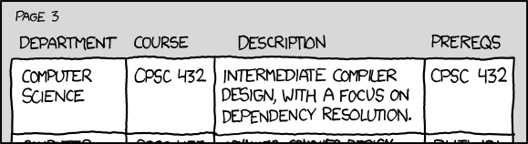

23.5 — 依赖关系
到目前为止，我们已经探讨了三种关系：组合、聚合和关联。我们把最简单的一种留到了最后：依赖关系。
在日常对话中，我们使用“依赖”一词来表示一个对象在完成某项任务时依赖于另一个对象。例如，如果你的脚骨折了，你需要依靠拐杖才能走动（但其他时候则不需要）。花朵依赖蜜蜂来授粉，以便结出果实或繁殖（但其他时候则不需要）。
一个 依赖关系 当一个对象调用另一个对象的功能来完成某个特定任务时，就发生了依赖关系。这是一种比关联更弱的关系，但被依赖对象的任何变化都可能破坏（依赖方）调用者的功能。依赖关系始终是单向的。
一个你已经见过很多次的依赖关系的好例子是 std::ostream。我们使用 std::ostream 的类用它来完成向控制台打印某些内容的任务，但其他时候则不需要。
例如：
#include <iostream>
class Point
{
private:
double m_x{};
double m_y{};
double m_z{};
public:
Point(double x=0.0, double y=0.0, double z=0.0): m_x{x}, m_y{y}, m_z{z}
{
}
friend std::ostream& operator<< (std::ostream& out, const Point& point); // // Point 在这里依赖于 std::ostream
};
std::ostream& operator<< (std::ostream& out, const Point& point)
{
// 由于 operator<< 是 Point 类的友元，我们可以直接访问 Point 的成员。
out << "Point(" << point.m_x << ", " << point.m_y << ", " << point.m_z << ')';
return out;
}
int main()
{
Point point1 { 2.0, 3.0, 4.0 };
std::cout << point1; // // 程序在这里依赖于 std::cout
return 0;
}
在上面的代码中，Point 与 std::ostream 没有直接关系，但它依赖于 std::ostream，因为 operator<< 使用 std::ostream 将 Point 打印到控制台。
C++ 中的依赖关系与关联
关于如何区分依赖关系和关联，通常存在一些混淆。
在 C++ 中，关联是一种关系，其中一个类以成员的形式保持与关联类的直接或间接“链接”。例如，Doctor 类有一个指向其患者的指针数组作为成员。你总是可以询问医生它的患者是谁。Driver 类将驾驶员对象拥有的汽车的 ID 作为整数成员保存。驾驶员始终知道与之关联的汽车是什么。
依赖关系通常不是成员。相反，被依赖的对象通常根据需要实例化（比如打开文件以写入数据），或者作为参数传递给函数（比如上面重载的 operator<< 中的 std::ostream）。
幽默时间
依赖关系（感谢我们的朋友来自 xkcd)：

当然，你我都知道这实际上是一种自反关联！